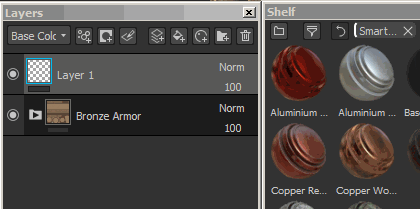
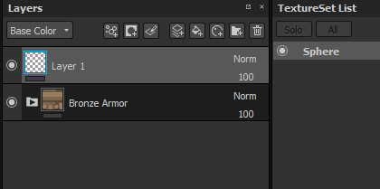
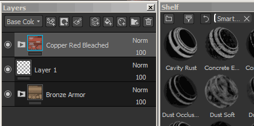
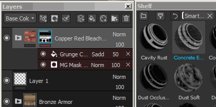
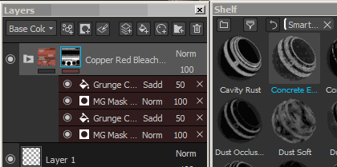
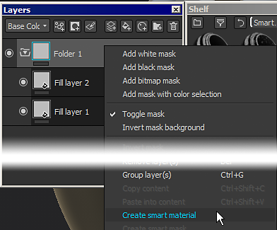
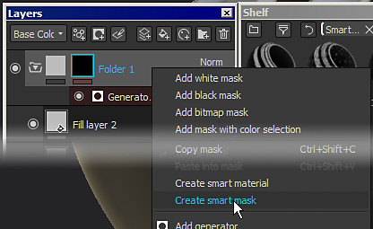

By drag and dropping a smart materials from the shelf into the layer stack :

Substance 3D Painter supports the use of advanced layer presets . These presets can be used to quickly share across Texture Sets or Projects a similar texturing process while keeping the results different, adapted to the mesh topology .
Note that once added in the layer stack, there is no way to retrieve which smart material was used. In the case a smart material need to updated, the process will have to be done manually.
However individual resources can be updated with the Resources Updater .
Smart Materials can be used anywhere in the layer stack, while smart masks can only be used in the effect stack.
To know more about the differences, see : Layer stack and Effects
Smart Materials can be added in two different ways :
By drag and dropping a smart materials from the shelf into the layer stack :

By clicking on the Smart Material button to open a mini-shelf :

Because Smart Masks are presets of effects, they can therefor only be added to effect stacks (for mask specifically).
To add a Smart Masks, simply drag and drop one from the Shelf onto the target layer :

Drag and dropping multiple Smart Masks will accumulate them :

It is possible however to replace the whole effect stack by pressing CTRL during the drag and drop :

To create a Smart Materials, a folder is required.
The content of the Smart Materials will be contained in the folder. Then simply right-click on the folder and select " Create smart material ". The Smart Material will then be added to the current shelf and will be named accoridng to the folder selected.

To create a Smart Mask, simply right-click over a layer and choose " Create smart mask ".

The presets are saved on the disk and can be retrieved from their dedicated folder.
To find the shelf location , see : Adding content on the hard drive .
Then anybody can simply import the file into their Substance 3D Painter shelf to use the preset.